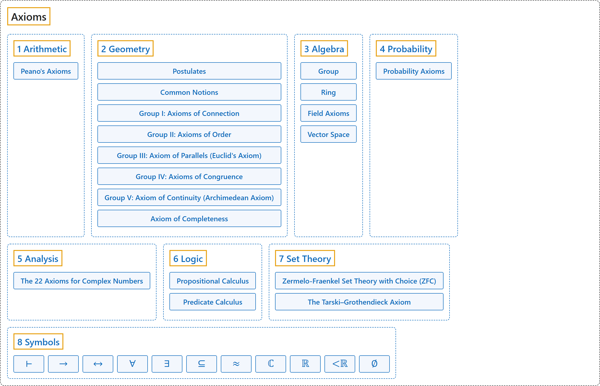

Axioms
Classification

Glossary
| Term | Definition | 中文翻译 | Source |
|---|---|---|---|
| Axioms 公理 |
"An axiom is a fundamental assumption that provides a starting point for reasoning." | 公理是为推理提供起点的基本假设。 | Megill, 2026, "The Axioms" section |
| 1 Arithmetic 算术 |
(No definition) | （无定义） | Weisstein, n.d., "Peano's axioms" entry |
| Peano's Axioms 皮亚诺公理 |
"Peano's axioms characterize the natural numbers as follows." | 皮亚诺公理这样刻画自然数： | Weisstein, n.d., "Peano's axioms" entry |
| 2 Geometry 几何 |
(No definition) | （无定义） | Euclid, ca. 300 B.C.E./1996, Book I, "Postulates" |
| Postulates 公设 |
(No definition) | （无定义） | Euclid, ca. 300 B.C.E./1996, Book I, "Postulates" |
| Common Notions 公理（一般概念） |
(No definition) | （无定义） | Euclid, ca. 300 B.C.E./1996, Book I, "Common Notions" |
| Group I: Axioms of Connection 第一组：关联公理 |
"The axioms of this group establish a connection between the concepts indicated above; namely, points, straight lines, and planes." | 这一组公理在前面所说的概念之间建立联系，即点、直线和平面。 | Hilbert, 1902, § 2 |
| Group II: Axioms of Order 第二组：顺序公理 |
"The axioms of this group define the idea expressed by the word "between," and make possible, upon the basis of this idea, an order of sequence of the points upon a straight line, in a plane, and in space." | 这一组公理定义“在……之间”这个词所表达的概念，并在此基础上，使直线上、平面上和空间中的点有先后顺序。 | Hilbert, 1902, § 3 |
| Group III: Axiom of Parallels (Euclid's Axiom) 第三组：平行公理（欧几里得公理） |
"The introduction of this axiom simplifies greatly the fundamental principles of geometry and facilitates in no small degree its development." | 引入这条公理大大简化了几何的基本原理，并在很大程度上便利了几何的发展。 | Hilbert, 1902, § 5 |
| Group IV: Axioms of Congruence 第四组：合同公理 |
"The axioms of this group define the idea of congruence or displacement." | 这一组公理定义合同（全等）或移动的概念。 | Hilbert, 1902, § 6 |
| Group V: Axiom of Continuity (Archimedean Axiom) 第五组：连续公理（阿基米德公理） |
"This axiom makes possible the introduction into geometry of the idea of continuity." | 这条公理使连续性的概念得以引入几何。 | Hilbert, 1902, § 8 |
| Axiom of Completeness 完备公理 |
"To the preceeding five groups of axioms, we may add the following one, which, although not of a purely geometrical nature, merits particular attention from a theoretical point of view." | 在前面五组公理之外，还可以加上下面这一条，它虽然不纯粹是几何性质的，但从理论上看值得特别注意。 | Hilbert, 1902, § 8 |
| 3 Algebra 代数 |
(No definition) | （无定义） | Weisstein, n.d., "Group" entry |
| Group 群 |
"A group G is a finite or infinite set of group elements together with a group operation that satisfies the four fundamental properties of closure, associativity, the existence of an identity element, and the existence of inverse elements." | 群 G 是由有限或无限个群元素组成的集合，连同一个群运算，满足四条基本性质：封闭性、结合律、存在单位元、存在逆元。 | Weisstein, n.d., "Group" entry |
| Ring 环 |
"A ring in the mathematical sense is a set S together with two binary operators + and * (commonly interpreted as addition and multiplication, respectively) satisfying the following conditions" | 数学意义上的环是一个集合 S 连同两个二元运算 + 和 *（通常分别解释为加法和乘法），并满足以下条件 | Weisstein, n.d., "Ring" entry |
| Field Axioms 域公理 |
"The field axioms are conditions on two binary operations, addition and multiplication, on a set F." | 域公理是对集合 F 上加法和乘法这两个二元运算的条件。 | Weisstein, n.d., "Field axioms" entry |
| Vector Space 向量空间 |
"A vector space V is a set equipped with vector addition and scalar multiplication satisfying the axioms below." | 向量空间 V 是配有向量加法和数乘的集合，满足下列公理。 | Weisstein, n.d., "Vector space" entry |
| 4 Probability 概率 |
(No definition) | （无定义） | Weisstein, n.d., "Probability axioms" entry |
| Probability Axioms 概率公理 |
"Probability axioms state that, given an event E in a sample space S which is either finite with N elements or countably infinite with N=∞ elements, we can write S=⋃_(i=1)^N E_i, and a quantity P(E_i), called the probability of event E_i, is defined such that" | 概率公理说：给定样本空间 S（有限，有 N 个元素；或可数无限，N = ∞）中的事件 E，可以写成 S = ⋃ Eᵢ，并且定义一个量 P(Eᵢ)，称为事件 Eᵢ 的概率，使得 | Weisstein, n.d., "Probability axioms" entry |
| 5 Analysis 分析 |
(No definition) | （无定义） | Megill, n.d.-c, "The 22 Axioms for Complex Numbers" table |
| The 22 Axioms for Complex Numbers 复数的 22 条公理 |
"We then assert that these eight objects have the properties specified by the axioms in the table below, as extensions to ZFC set theory." | 然后我们断言这八个对象具有下表公理所规定的性质，作为 ZFC 集合论的扩充。 | Megill, n.d.-c, "The 22 Axioms for Complex Numbers" table |
| 6 Logic 逻辑 |
(No definition) | （无定义） | Megill, 2026, "The Axioms" section |
| Propositional Calculus 命题演算 |
"Our system of propositional calculus consists of three axioms and the modus ponens inference rule." | 我们的命题演算系统由三条公理和肯定前件推理规则组成。 | Megill, 2026, "The Axioms" section |
| Predicate Calculus 谓词演算 |
"The axioms of predicate calculus express the logical properties of these new symbols that are universally true, independent from any theory (like set theory) making use of them." | 谓词演算的公理表达这些新符号普遍成立的逻辑性质，与使用它们的任何理论（如集合论）无关。 | Megill, 2026, "The Axioms" section |
| 7 Set Theory 集合论 |
(No definition) | （无定义） | Megill, 2026, "The Axioms" section |
| Zermelo-Fraenkel Set Theory with Choice (ZFC) 带选择公理的策梅洛-弗兰克尔集合论（ZFC） |
"Set theory uses the formalism of propositional and predicate calculus to assert properties of arbitrary mathematical objects called "sets."" | 集合论用命题演算和谓词演算的形式体系，来断言称为“集合”的任意数学对象的性质。 | Megill, 2026, "The Axioms" section |
| The Tarski–Grothendieck Axiom 塔斯基-格罗滕迪克公理 |
"The main important missing piece is the ability to do category theory, which requires huge sets (inaccessible cardinals) larger than those postulated by the ZFC axioms. The Tarski–Grothendieck Axiom postulates the existence of such sets." | 主要缺少的一块是做范畴论的能力，范畴论需要比 ZFC 公理所假定的更大的巨大集合（不可达基数）。塔斯基-格罗滕迪克公理假定这样的集合存在。 | Megill, 2026, "The Axioms" section |
| 8 Symbols 符号 |
(No definition) | （无定义） | Megill, 2026, "The Axioms" section |
| ⊢ 可证符号（十字转门） |
"The turnstile ⊢ is a symbol (introduced by Frege in 1879) used in formal logic to indicate that the wff that follows is provable (and is traditionally used even for an axiom, which is "provable" in one step, itself); it can be ignored for informal reading." | 十字转门 ⊢ 是一个符号（弗雷格于 1879 年引入），在形式逻辑中表示其后的合式公式可证（传统上公理也用它，公理一步即“可证”）；非正式阅读时可以忽略它。 | Megill, 2026, "The Axioms" section |
| → 蕴涵（如果……那么） |
"The constants that occur in the axioms of predicate calculus are ( , ) , → , ¬ , = , ∈ , and ∀ (left parenthesis, right parenthesis, implies, not, equals, is a member of, for all)." | 谓词演算公理中出现的常量是 ( 、 ) 、 → 、 ¬ 、 = 、 ∈ 和 ∀（左括号、右括号、蕴涵、非、等于、属于、对所有）。 | Megill, 2026, "The Axioms" section |
| ↔ 当且仅当（双条件） |
"( 𝜑 ↔ 𝜓 ) is an abbreviation for (( 𝜑 → 𝜓 ) ∧ ( 𝜓 → 𝜑 ))" | ( 𝜑 ↔ 𝜓 ) 是 (( 𝜑 → 𝜓 ) ∧ ( 𝜓 → 𝜑 )) 的缩写 | Megill, 2026, "The Axioms" section |
| ∀ 全称量词（对所有） |
"The wff ∀ 𝑥 𝜑 is read "for all x, it is the case that phi is true."" | 合式公式 ∀ 𝑥 𝜑 读作“对所有 x，phi 都为真”。 | Megill, 2026, "The Axioms" section |
| ∃ 存在量词（存在） |
"∃ 𝑥 𝜑 is an abbreviation for ¬ ∀ 𝑥 ¬ 𝜑" | ∃ 𝑥 𝜑 是 ¬ ∀ 𝑥 ¬ 𝜑 的缩写 | Megill, 2026, "The Axioms" section |
| ⊆ 子集（包含于） |
"Define the subclass relationship. Definition 5.9 of [TakeutiZaring] p. 17. For example, {1, 2} ⊆ {1, 2, 3}" | 定义子类关系。见 [TakeutiZaring] 第 17 页定义 5.9。例如 {1, 2} ⊆ {1, 2, 3} | Megill, n.d.-a, "df-ss" page |
| ≈ 等势 |
"Define the equinumerosity relation." | 定义等势关系。 | Megill, n.d.-b, "df-en" page |
| ℂ 复数集 |
"we introduce two classes ℂ (set of complex numbers) and ℝ (set of real numbers)" | 我们引入两个类：ℂ（复数集），以及 ℝ（实数集） | Megill, n.d.-c, "The 22 Axioms for Complex Numbers" table |
| ℝ 实数集 |
"we introduce two classes ℂ (set of complex numbers) and ℝ (set of real numbers)" | 我们引入两个类：ℂ（复数集）和 ℝ（实数集） | Megill, n.d.-c, "The 22 Axioms for Complex Numbers" table |
| <ℝ 实数的小于 |
"and one binary relation <ℝ (less than for real numbers)" | 以及一个二元关系 <ℝ（实数的小于） | Megill, n.d.-c, "The 22 Axioms for Complex Numbers" table |
| ∅ 空集 |
"Define the empty set." | 定义空集。 | Megill, n.d.-d, "df-nul" page |
References
Euclid. (1996). Euclid's Elements (D. E. Joyce, Ed.; T. L. Heath, Trans.). Clark University. (Original work published ca. 300 B.C.E.) Retrieved October 29, 2026, from https://mathcs.clarku.edu/~djoyce/elements/bookI/bookI.html
Hilbert, D. (1902). The foundations of geometry (E. J. Townsend, Trans.). Open Court. Project Gutenberg. https://www.gutenberg.org/ebooks/17384
Megill, N. (2026). Metamath Proof Explorer home page (last updated January 19, 2026). Metamath. Retrieved October 29, 2026, from https://us.metamath.org/mpeuni/mmset.html
Megill, N. (n.d.-c). Real and complex numbers: Metamath Proof Explorer. Metamath. Retrieved October 29, 2026, from https://us.metamath.org/mpeuni/mmcomplex.html
Weisstein, E. W. (n.d.). Field axioms. MathWorld. Retrieved October 29, 2026, from https://mathworld.wolfram.com/FieldAxioms.html
Weisstein, E. W. (n.d.). Group. MathWorld. Retrieved October 29, 2026, from https://mathworld.wolfram.com/Group.html
Weisstein, E. W. (n.d.). Peano's axioms. MathWorld. Retrieved October 29, 2026, from https://mathworld.wolfram.com/PeanosAxioms.html
Weisstein, E. W. (n.d.). Probability axioms. MathWorld. Retrieved October 29, 2026, from https://mathworld.wolfram.com/ProbabilityAxioms.html
Weisstein, E. W. (n.d.). Ring. MathWorld. Retrieved October 29, 2026, from https://mathworld.wolfram.com/Ring.html
Weisstein, E. W. (n.d.). Vector space. MathWorld. Retrieved October 29, 2026, from https://mathworld.wolfram.com/VectorSpace.html